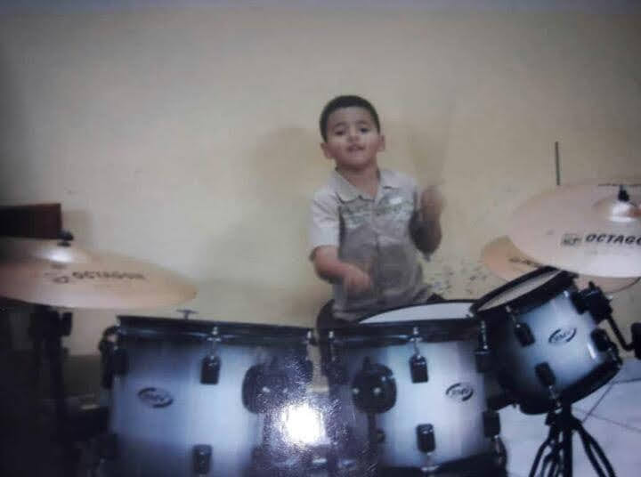
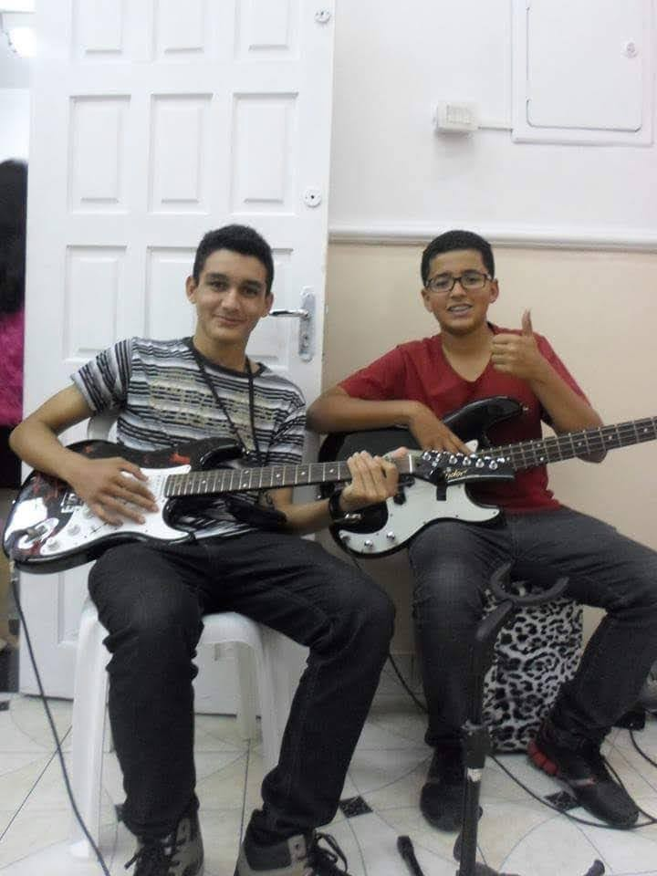
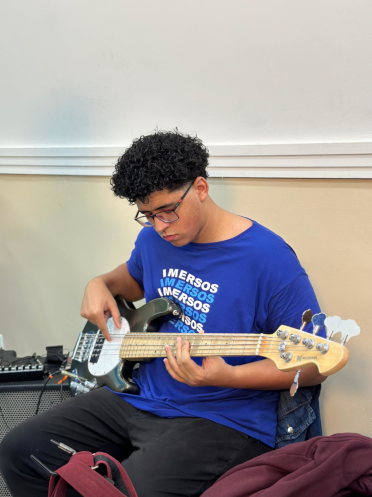

A música sempre fez parte da minha vida. Cresci em um ambiente com muito contato com instrumentos musicais, e com isso meu interesse por ela foi crescendo. Meu primeiro instrumento foi a bateria, comecei com 12 anos e fui me aperfeiçoando. Com isso, posso compara-la com o mercado de programação e desenvolvimento: "Você pode até tocar, programar e desenvolver bem, mas você nunca vai saber tudo. Sempre tem algo novo à se aprender."
Atualmente eu toco três instrumentos, sendo eles: bateria, teclado, contra-baixo e um pouco de violão. Mesmo sabendo, nunca parei de praticar e aperfeiçoar o que eu já sabia, o que me ajudou a ter foco, consistência, e também não desistir.
Sabe quando você vai aprender pela primeira vez a fazer o acorde de "Fá" no violão? Tem muita gente que pensa em desistir, até eu pensei - hahaha- mas, botei a cara, fui pra cima e consegui! A vida é como a música, pode até ser muito boa, mas as vezes vai ter um novo acorde para aprender que vai ser BEM difícil por um momento, porém, assim como ela, a vida é bela.
  